Named Varieties:
| Ramblin' Spots | 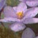 | Flecks, specks and spots of blue are randomly placed upon the petals of the semidouble and double light pink stars, which lay upon a bed of variegated foliage, in cream, white, green and yellow. |
| Bob Serbin | 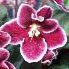 | Dark red single and semidouble pansies with a white edge. Standard foliage is medium green. |
| Stargate | 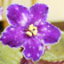 | A narrow halo of pastel lavender over plum, bleeding into white, glows as it surrounds bluish-orchid, semidouble stars, illuminated by bursts and puffs of delicate, soft pink. The exquisite, dark green show foliage sports a red reverse. This variety will grow quite large. |
| Shocking | 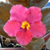 | Single/semidouble hot red-coral star, deeper red-coral fantasy. Black-green foliage. Standard. |
| Lady Love | no photo | Frilly, sparkly edges of plum outline the petals of the soft, light pink semidoubles, flowers of the utmost delicacy and charm. Surrounding the wealth of blooms the dark green heart-shaped leaves are variegated with rose, plum and white. Large. |
| Reindeer Games | no photo | Beautiful icy white slightly ruffled 2" double star blossoms with a hint of chartreuse edge, kissed with pink and containing a pink surprise. Large growing dark green pointed glossy foliage, variegated with cream to yellow edge. |
| Alamo Explosion | no photo | Unusual bright red with deeper red on outer edge of blossoms cover nice medium green tailored foliage. Standard. |
| Beachcomber | no photo | Huge, semidouble and double stars of white with random mottling and flecking in shades of pink and blue on petal edges. Variable. Large medium green foliage. |
| Rainbow Connection | This outstanding new cultivar has large, light pink single and semidouble stars. The petal edges are fluted and wavy, painted in a wide band of light fuschia. The edging contains random fuschia flecking, while light blue fantasy is splashed about the face. Deep green, plain, rosette forming, show foliage. | |
| Blue Dragon | 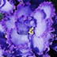 | Semidouble/double light blue frilly edged star, dark blue eye, bands of variable reddish-purple with light green edge. Dark green foliage. Unforgettably stunning! (photo from website) |
| Ice Storm | no photo | Single & semidouble white, pansy flowers with a blue center and green edging on the petal tips. Medium green, semiminiature,tailored foliage. |
|
EverGrace "Space Violet" |
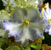 | Single ruffled pansies with lavender edges and white centers. Top petals have pale lime green edges. Very ruffled medium green foliage. Larger than Standard. |
| Rhapsodie Rebecca | 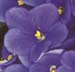 |
Single blue pansy flower. Medium green, serrated foliage. Standard. (photo from website) |
| Casper Ghost | 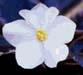 |
Single white pansy flowers. Variegated green/pink/white foliage. Standard. (photo from website) |
| Satin Bow | 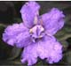 |
Large, lightly frilled semi-double to double stars. Pale pink with rosy centers and heavily decorated with fantasy spots of deep blue-purple. Dark green , shiny foliage. Standard. (photo from website) |
| Silver N Gold | 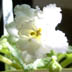 |
Semidouble white frilled star/yellow mottling. Medium green, quilted, wavy foliage. Standard.
|
| Windy Day | 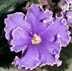 |
Semidouble large medium blue star, ruffled white edge, may have hint of green. Dark green, glossy, pointed ruffled foliage. (photo from website) |
Un-named Varieties: These are violets I was given as gifts or have picked up at the grocery store because they were so neat. They are generic unnamed varieties, so I have given them my own names so I can keep track of them. Just because they are grocery store orphans doesn't mean they can't have names too!
| Gonzo | 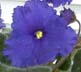 | Single ruffled pansy flower in pure "violet" purple. Medium green, quilted, red reverse foliage. My first and favorite violet. It grows like crazy. |
| Jack 'N Jill | 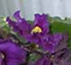 | Single ruffled pansy flower in raspberry pink. Medium green foliage. After only a few days Lucy managed to knock this one off the windowsill and "break its crown" (hence the name) but I have 3 babies going strong. |
| Blue's Clues | no photo | Double blue star with medium green quilted foliage. |
| Perseid | Single blue star with lots of glitter. Light green, red-reverse foliage. True star shape! | |
| I Spy | 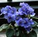 | Single lavender-blue pansy flower. Medium green tailored foliage. Miniature. At one time, I counted 38 flowers on it. |
| SKU-ed | no photo | Single white pansies with dark plum on edges and center. Vareigated foliage in deep green, lime, yellow and white. Another Home Depot special. |
| |
|